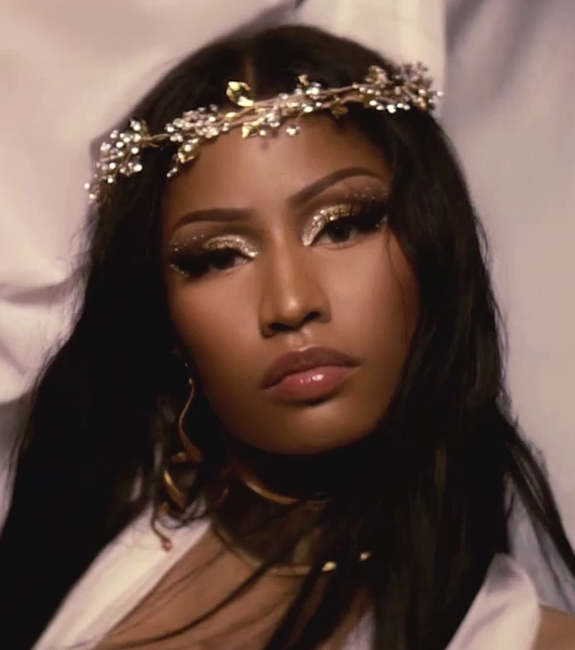

|  | |
|---|---|
| Born | Onika Tanya Maraj December 8, 1982 (age 39) Saint James, Port of Spain, Trinidad and Tobago |
| Education | Fiorello H. LaGuardia High School |
| Occupation | Rapper, singer, songwriter, actress |
| Years active | 2004 - present |
| Spouse(s) | Kenneth Petty |
| Children | 1 |
Minaj briefly signed with Brooklyn group Full Force, in which she rapped in a quartet called The Hoodstars composed of Lou$tar (son of "Bowlegged Lou"), Safaree Samuels (Scaff Beezy) and 7even Up.[22][23] In 2004, the group recorded the entrance song for WWE Diva Victoria, "Don't Mess With", which was featured on the compilation album ThemeAddict: WWE The Music, Vol.6. Minaj later left Full Force and uploaded songs on her Myspace profile, sending several of her songs to people in the music industry. Later, Fendi, CEO of Brooklyn label Dirty Money Entertainment, signed Minaj to his label in 2007 under a 180-day contract.[24] Originally adopting the stage name Nicki Maraj, she eventually changed it to Nicki Minaj stating that "my real name is Maraj. Fendi flipped it when he met me because I had such a nasty flow!"[25]
Minaj released her first mixtape, Playtime Is Over, on July 5, 2007,[26] and her second, Sucka Free, on April 12, 2008.[27] That year, she was named Female Artist of the Year at the 2008 Underground Music Awards.[28] She released her third mixtape, Beam Me Up Scotty, on April 18, 2009;[29] it received favorable coverage on BET and MTV.[30][31] At the time, she was managed by Debra Antney. One of its tracks, "I Get Crazy", reached number 20 on the U.S. Billboard Hot Rap Songs chart and number 37 on the Hot R&B/Hip-Hop Songs chart.[32] After Minaj was discovered by fellow rapper Lil Wayne,[33] in August 2009 it was reported that she signed a recording contract with his Young Money Entertainment.[34] That November, she appeared with Gucci Mane and Trina on the remix of "5 Star Bitch" by Yo Gotti.[35]
2010–2011: Breakthrough with Pink FridayIn October, Minaj was featured on Kanye West's "Monster", with her verse receiving acclaim and many critics regarding it as the best verse; The Village Voice's Sean Fennessey stated that "Monster" was the track that announced Minaj's "brilliance" to most people.[52] Complex rated Minaj's "Monster" verse as the number-one best rap verse in the past five years.[53] Lauren Nostro of Complex wrote: "Once the beat drops, we meet the many faces of Nicki Minaj. [...] Her performance has the power, years after its release, makes you stop dead in your tracks. Altering her vocal style on every line, she bounces her wordplay from Giuseppe Zanotti shoes to Tony Matterhorn's "Dutty Wine" to suggesting a ménage à trois with Kanye and his then-girlfriend Amber Rose. [...] It was clear, she did her thing alongside the best in the game—she stole the show, in fact, outshined them all." In November 2010, Minaj received her first Grammy Award nomination for her guest verse on Ludacris' song "My Chick Bad".[54]
2012–2013: Pink Friday: Roman Reloaded and The Re-UpMinaj began her headlining Pink Friday Tour on May 16, 2012,[97] which was followed by the Pink Friday: Reloaded Tour beginning October 14, 2012.[98] Although she was scheduled to headline the June 3 Hot 97 Summer Jam at MetLife Stadium in New Jersey, at the request of Lil Wayne she canceled her appearance the day of the show after Peter Rosenberg of the station dismissed her single "Starships" as "not real hip-hop".[99]
2014–2017: The Pinkprint and other venturesMinaj's first live-action theatrical film The Other Woman was filmed in spring 2013 and premiered on April 25, 2014.[111] She played Lydia, assistant to Carly (played by Cameron Diaz) .[112][113] In 2013, Minaj described her then-forthcoming third album, The Pinkprint, as "a continuation of The Re-Up with a lot more" and said it would focus on her "hip-hop roots".[114][115] During an MTV interview, she said that her third album would be "next level" and that she has "much to talk about".[116]
2018–2019: QueenMinaj announced her fourth album, Queen, on the red carpet at the 2018 Met Gala; the album was scheduled to be released on June 15, 2018,[157] but was delayed multiple times before being released on August 10, 2018.[158][159][160] Its lead single, "Chun-Li", was released on April 12, 2018, and peaked at number 10 on the Billboard Hot 100.[161] She performed the song on Saturday Night Live and the 2018 BET Awards.[162][163] Another single, "Barbie Tingz", was released alongside "Chun-Li", but did not make the final album cut. It is, however, included on the Target version of the album.[164] Queen's second single, "Bed", featuring Ariana Grande, was released on June 14, 2018, alongside the album pre-order, and peaked at number 42 on the Hot 100.[165][166][167] On July 22, 2018, Tekashi 6ix9ine's single "Fefe", which featured Minaj, was released and debuted at number four on the Billboard Hot 100.[168] "Fefe" marked Minaj's highest bow on the chart as a featured artist at the time, besting the sixth place start of "Bang Bang" in 2014.[169] It later peaked at number three on the Hot 100,[168] and was added to Queen in the middle of its first tracking week.[170]
2020–present: Collaborations and Beam Me Up Scotty re-releaseAfter a social media hiatus, she returned to both Twitter and Instagram on January 30, 2020, to announce her appearance as a guest judge on the premiere episode of the twelfth season on the American reality competition series RuPaul's Drag Race.[201] The next day, her collaboration with American singer Meghan Trainor entitled "Nice to Meet Ya" was released accompanied by a music video.[202] Soon after posting a snippet of a new, untitled track, Minaj announced that she would be returning to music with her first solo song of 2020, titled "Yikes" which was released on February 7, 2020.[203][204]
- Musical Styles
- Alter ego
- Influence
After a social media hiatus, she returned to both Twitter and Instagram on January 30, 2020, to announce her appearance as a guest judge on the premiere episode of the twelfth season on the American reality competition series RuPaul's Drag Race.[201] The next day, her collaboration with American singer Meghan Trainor entitled "Nice to Meet Ya" was released accompanied by a music video.[202] Soon after posting a snippet of a new, untitled track, Minaj announced that she would be returning to music with her first solo song of 2020, titled "Yikes" which was released on February 7, 2020.[203][204]